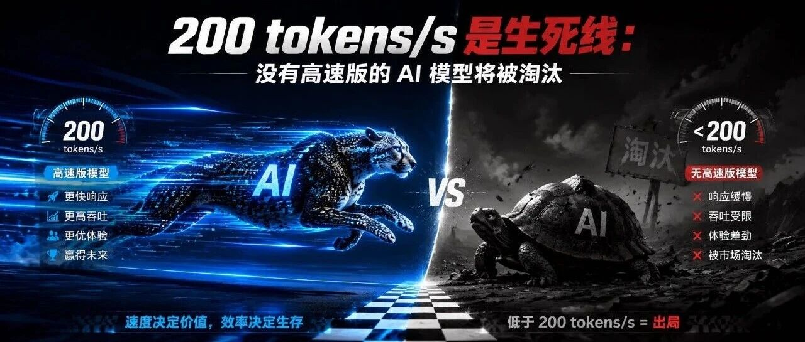

AI 模型速度大戰 200 tokens/s 成生死門檻

200 tokens/s 是 AI 模型的生死線。主流廠商全部在同一窗口期推出高速版本，低於此門檻的模型，未來 12 至 18 個月將失去大大部分高價值開發者用戶。
典型 Agent 編程任務需 10 次調用、每次 500 tokens（共 5000 tokens）。80 t/s 需 62.5 秒，200 t/s 只需 25 秒，400 t/s 僅需 12.5 秒。超過 30 秒人便開始任務切換，Agent 試錯循環代價極高。
安全區（200+ t/s）：Gemini 3.5 Flash（250+）、GLM-5.1 高速版（400）、MiMo Ultra（1000+）、Kimi K2.7 Code 高速版（260）。警戒區（80-150 t/s）：還沒發高速版的標準版模型。淘汰區（<80 t/s）：基本告別 Agent 生態。
Agent 架構的本質是用計算（多次調用）去補智能（單次不夠準），計算的天花板就是吞吐量。模型夠快，開發者就敢做：多個 Agent 並行投票、同一問題生成 5 個答案再挑最優、預測生成等。500+ t/s 是真正目標，200 只是及格線。
① 丟 Agent 開發者（最挑剔的用戶群，會用腳本實測並公開排名）
② 丟 Coding 場景（最成熟、付費意願最高的市場）
③ 建立不了遷移壁壘（先占開發者心智的那家，優勢厚實）
今天宣佈 1000+ t/s 的廠商，不是在炫數字，是在跟開發者說：來我們這上面搭下一代 Agent 吧。沒有高速版的廠商，這句話都說不出口。
「200 tokens/s 是個實打實的門檻：低於它，一個中等複雜度的 Agent 任務會覺得『明顯卡』；過了它，用戶基本能待在心流裡。」
— 威易网未來 12 至 18 個月將是 AI 模型市場的關鍵洗牌期。速度之爭是最理性的進化方向，先占住開發者心智的那家，會拿到很厚的遷移壁壘，成為下一代 Agent 開發的首選後端。
| 速度（tokens/s） | 200+（安全區） | 80-150（警戒區） | <80（淘汰區） |
|---|---|---|---|
| 代表型號 | Gemini 3.5 Flash、GLM-5.1、MiMo Ultra、Kimi K2.7 | 還沒發高速版的標準版模型 | 老一代模型 |
| 典型任務耗時 | 25 秒 | 33-62 秒 | >62 秒 |
| 用戶體驗 | 明顯流暢 | 開始感到延遲 | 明顯卡頓 |
| 市場前景 | Agent 生態入場券 | 邊緣化風險 | 基本出局 |